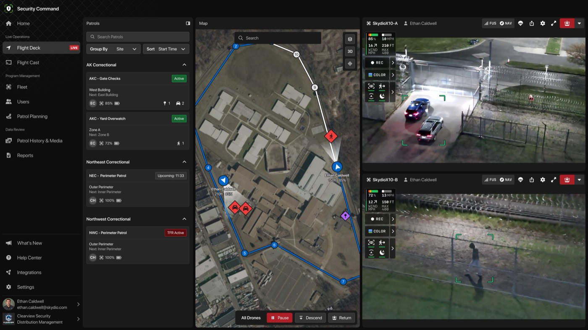
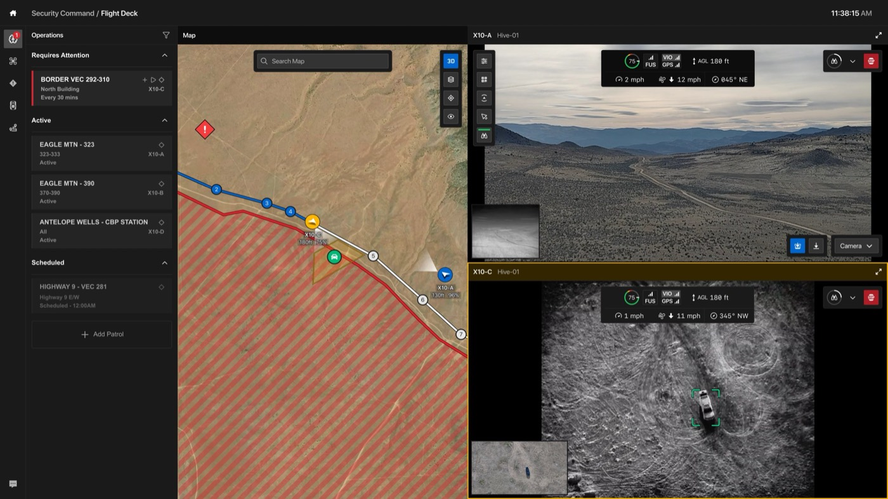
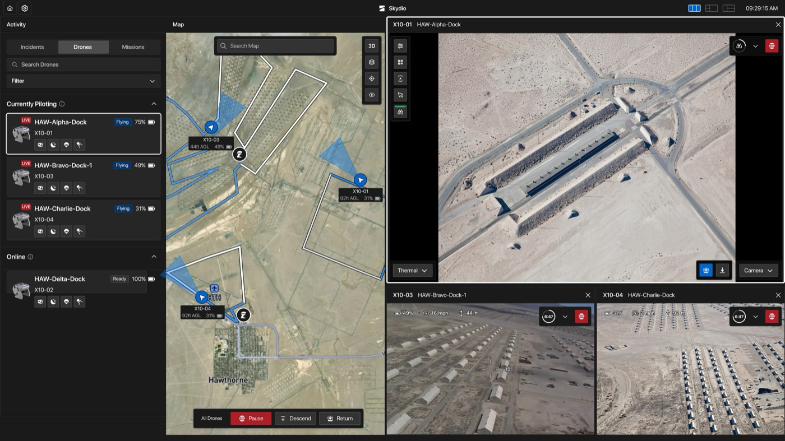
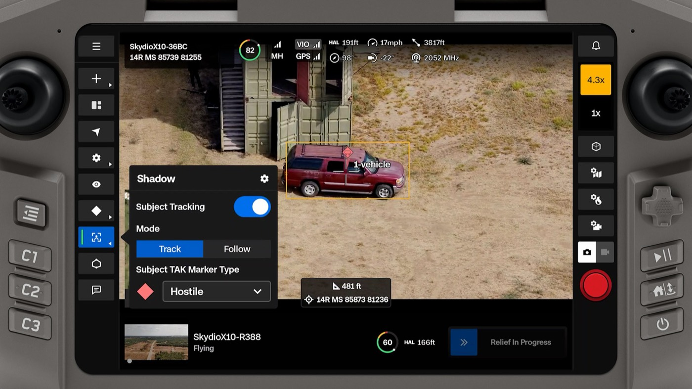
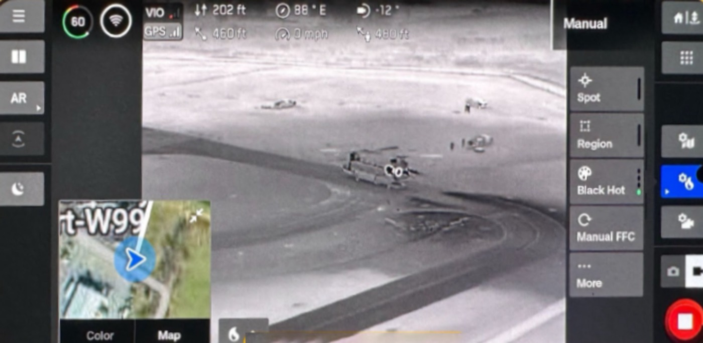
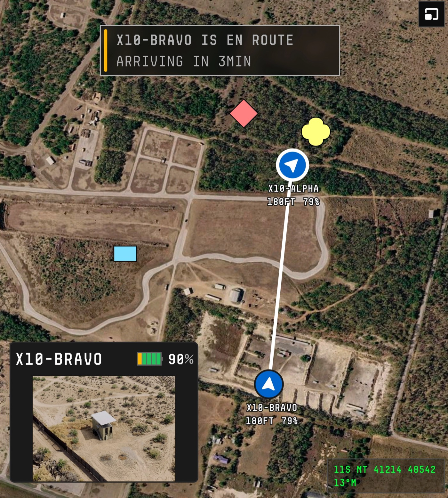
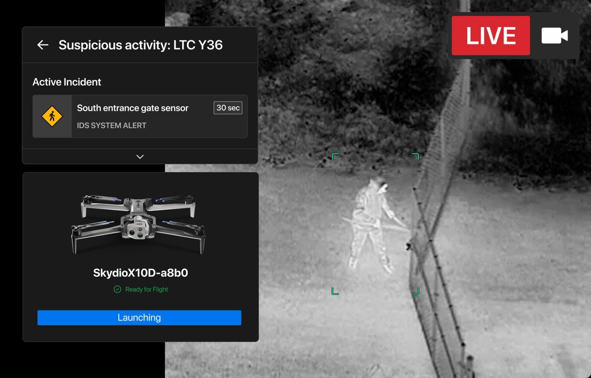
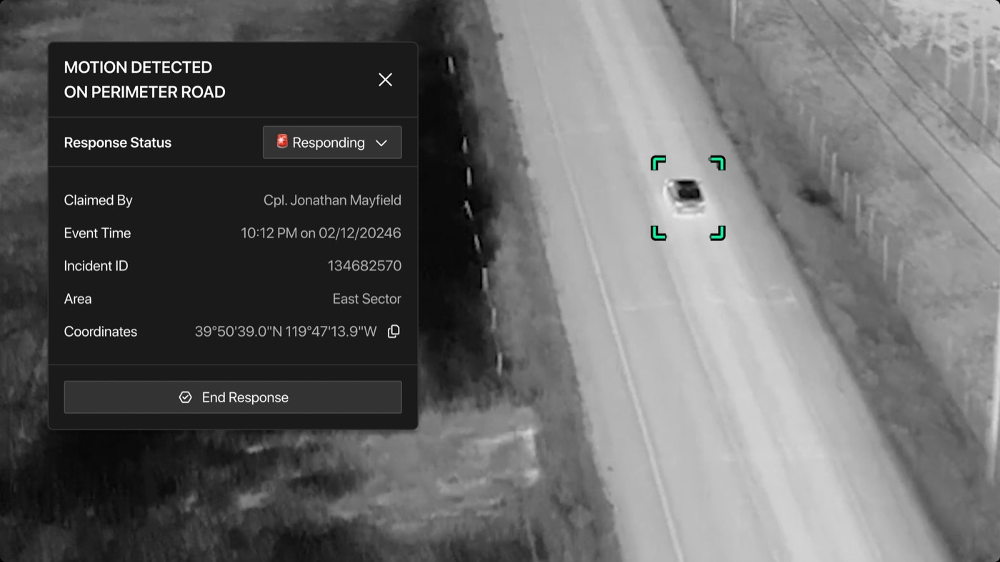
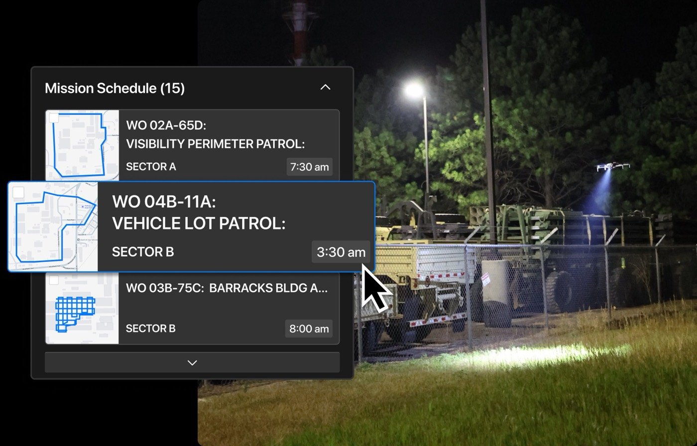

A component library broken out of Skydio's public product screenshots for ISR Command, Security Command / Flight Deck, Base Security, Border Security, and the X10D controller. Each component is rebuilt in HTML/CSS so the anatomy is inspectable, with the screen it came from listed underneath.
Marketing renders from skydio.com, pulled 9 Nov 2026. Full-resolution copies of all 23 screens are in interview-prep/skydio-defense-screens/.









Near-black, low-chroma surfaces stepped by lightness, with color held back for meaning: blue for "ours / selected / go", red for "stop / hostile / live", green for "healthy / tracked". Amber marks whatever the operator is focused on right now.
neutralFive steps, each roughly +4–6% lightness. Panels separate by fill, rarely by border, which keeps a four-pane screen from looking caged.
signalNo brand accent shows up inside the product. Every saturated color carries operational meaning, and red is reserved for things that interrupt the operator.
MIL-STD-2525Imported from the TAK ecosystem as-is, not restyled. That keeps a Skydio marker readable to anyone on the same TAK server.
3 voicesA neutral grotesk for the app, a monospace for machine-generated numbers on video, and a wide-tracked mono for TAK messages. Uppercase marks system-authored text such as alert titles and work-order names.
The desktop app is a fixed four-column frame: nav, list, map, video. Everything below lives inside one of those columns.
NavRailNavRail.compactAppHeaderPanelHeader / CollapsibleSquare-ish controls (2–4px radius) on surface-3. Status lives in small rectangular badges, never pills.
ListControlsSegmentedSwitch / StatusSelectBadgeThe left list is where the operator triages. Each card type answers "what is it, is it OK, and what's next" in three rows.
PatrolCardOperationItemAssetItemMissionItemSatellite basemap, drawn over with high-contrast, white-stroked symbols so they hold up against any terrain.
DroneMarkerRouteMarkerEventMarkerCoTMarkerMapToolbarFleetActionsEach feed is a self-contained cockpit: identity bar on top, telemetry and camera controls floated over the video.
FeedTileHUD.compactHUD.fullReticle / BoundingBoxFeedControlsAttachmentBar / StreamShareSame visual language, re-cut for a 7" screen, gloves and sun. Targets grow to ~44px, labels shrink to icons, and every tool sits on a screen edge next to a thumb.
ToolRail / FlyoutCaptureRailThermalMenu / TargetReadoutReliefBarWhen Skydio speaks into TAK, it adopts TAK's look: monospace caps, MGRS everywhere, affiliation symbols. This is a deliberate second dialect, not drift.
IsrToastPipCard / GridReadoutReliefLinkThe base and border products are built around one loop: a sensor fires, a dock launches, an operator claims it, and the response is closed out. Each step has its own card.
IncidentCardLaunchCardIncidentDetailLiveTag / AlertToastTwelve principles read off the components above, each written as rules a UI generator can follow and a linter can check. MUST and NEVER are hard constraints. CHECK is how to test a generated screen against the principle.
Every saturated hue in the product stands for an operational meaning. There is no brand accent in the product chrome. The fewer colors on screen, the faster an anomaly shows.
Pause, STOP, return-to-home, LIVE and hostile markers are the only red elements. Because red is scarce, the safe-stop control is always the easiest thing to find.
A selected aircraft is amber on the map, amber-bordered in the feed grid and outlined in the list, all at once. The operator never has to match names across panes.
Desktop columns run left to right in the order of a response: triage the list, place it on the map, act in the feed. Each command bar attaches to the view whose scope it acts on.
Most words in the UI describe what the autonomy is doing: Launching, Relief In Progress, Every 30 mins, Upcoming 11:33. The operator supervises more than they fly.
Three type voices tell the operator who is speaking. Monospace means the aircraft is measuring something. Uppercase means the system wrote it. Sentence case means a person named it.
Anything that lands in TAK uses TAK's own look: MIL-STD-2525 affiliation symbols, MGRS grids and mono caps. It stays readable to a soldier who has never used a Skydio product.
The desktop labels everything. The controller collapses the same functions into edge rails and flyouts sized for gloves and sunlight. HAL, VIO, GPS and MGRS mean the same thing on both.
Maps and video are unpredictable backgrounds: desert, snow, thermal white, night. Every overlay brings its own contrast with a white stroke, a dark scrim or a dark chip.
The base and border products run one loop: a sensor fires, a dock launches, a person claims the incident, and the response is closed. The UI never leaves an alert unowned or open-ended.
Patrol, asset, mission and incident cards all answer three questions in the same order. That lets an operator scan a long list without reading every card.
Panes separate by stepping the fill, not by drawing borders, and corners stay at 2–4px. Four dense panes read as one calm instrument instead of a wall of boxes.
The things the product is about, what each one means to an operator, how they relate, which states they move through, and which component draws them. A generator should start here: pick the entities a screen is about, then let the ontology choose the components.
| Entity | What it means to the operator | Key attributes | States | Rendered as |
|---|---|---|---|---|
| Place · where the work happens | ||||
| Organizationtenant | The customer program you are working inside, such as a base security office or a border sector. It sets who can see what. | name, logo, deployment (cloud / on-prem) | — | NavRail footer org switcher |
| Sitefacility | A physical place you are responsible for. It is the top-level grouping for patrols and docks. | name, boundary, docks[] | — | Collapsible group header, map extent |
| Sector / Zonearea | A piece of a site with its own owner and patrol cadence. Incidents report where they are by sector. | name, polygon, site | normalalerting | Map polygon, MissionItem sector line, Area row |
| Airspace limitTFR · geofence | A place you may not fly, or may fly only under conditions. It overrides plans. | polygon, altitude cap, window | inactiveactive | Red-hatched map zone, TFR Active badge |
| Assets · what you fly with | ||||
| Docklaunch · charge | A fixed home that launches, recovers and charges an aircraft with no one on site. It is what lets a drone get airborne in under 2 minutes. | name (HAW-Alpha-Dock), site, aircraft, weather | readylaunchingemptyoffline | AssetItem, dock map marker, LaunchCard |
| AircraftX10 · X10D | The drone. It is the one entity that moves, so most of the screen is about where it is, how healthy it is and what it sees. | callsign, battery %, HAL/AGL, speed, heading, link (MH/FUS), nav (VIO/GPS), flight time left | readylaunchingflyingholdingreturningrelieved | DroneMarker, FeedTile, HUD, AssetItem |
| Sensor / Payloadcamera · attachment | What the aircraft can sense or do. Choosing color or thermal, zoom, speaker or light changes what you can learn and how you can intervene. | type, mode (color / thermal palette), zoom, recording | offonrecording | CamStack, ThermalMenu, CaptureRail, AttachmentBar |
| People · who is accountable | ||||
| Operatorpilot · responder | The person accountable. A pilot flies or supervises an aircraft. A responder claims an incident. Rank and name appear because accountability is personal. | name, rank, role, assigned aircraft | availablepilotingresponding | Initials avatar, "Claimed By" row, feed header pilot name |
| Tasking · what you were told to do | ||||
| Work ordertasking ref | The formal request that authorizes a mission, in the vocabulary the unit already uses. | ID (WO 04B-11A), requester, sector | openscheduleddone | MissionItem title prefix |
| Missionpatrol · response · overwatch · relief | A unit of planned work for an aircraft. A patrol is recurring and proactive. A response is triggered by an incident. Overwatch holds on a subject. A relief swaps aircraft without losing coverage. | type, aircraft, route, cadence ("Every 30 mins"), start time | scheduledupcomingactivepausedneeds attentiondone | PatrolCard, OperationItem, MissionItem |
| Routepath | The path a mission flies. Its shape is how operators recognize a mission at a glance. | polyline, waypoints[], altitude | plannedin progress | Map polyline (blue flown, white ahead), schedule thumbnail |
| Waypointstop | An ordered checkpoint. "Next: East Building" tells you where the aircraft is headed. | index, position, action | pendingreached | RouteMarker, card "Next:" line |
| Triggers · why it is happening now | ||||
| Integrationsource system | Another system Skydio listens to or talks to: intrusion detection, video management, CAD, counter-UAS, TAK. It tells you whether to trust a signal and where it came from. | vendor, type, direction (in / out) | connecteddegraded | Source label ("IDS SYSTEM ALERT") |
| Sensor alertevent | A single signal from an integration, such as a gate opening or motion on a road. On its own it is evidence, not yet a decision. | sensor, type, time, position | newgrouped | IncidentCard source row with elapsed time |
| Incidentcase | One or more alerts treated as a single situation that needs a person. This is where accountability attaches. | ID, title, area, coordinates, claimed by, response status | newclaimedrespondingresolved | IncidentCard, IncidentDetail, "!" map marker |
| Perception · what the aircraft sees | ||||
| Streamvideo | The live or recorded view from a sensor. It is the primary evidence, and it can be shared outside the operations center. | aircraft, sensor, live flag, share link + expiry | liverecordingsharedended | FeedTile, LiveTag, StreamShare |
| DetectionAI | Something the onboard AI found, such as a person, vehicle or animal. It is cheap and frequent, so the UI counts detections more than it announces them. | class, confidence, box, time | seendismissedpromoted | Reticle, class tag, patrol card counts |
| Subjecttrack | A detection a person decided matters. It gets followed, labeled and handed off between aircraft. | class, affiliation, track mode (track / follow), owner aircraft | trackinglosthanded off | BoundingBox, Shadow flyout, amber focus |
| Marker (CoT)shared point | A point you share with your whole force over TAK. It becomes part of everyone's common picture. | affiliation (hostile / friend / unknown / neutral), MGRS, author | localpublishedstale | CoTMarker, GridReadout |
Any flying state can jump to paused / holding through the red stop control (P02). Relief happens before battery reserve runs out, so the subject stays covered.
needs attention is an overlay state, not a step. An active airspace limit (TFR) or a failed checkpoint lifts the mission to the top of the list with a red stripe.
New incidents dispatch a response mission from the nearest ready dock. They cannot be resolved without an owner (P10).
Each step needs more human judgment and reaches more people: from the AI, to the operator, to the unit, to the whole force on TAK.
How a UI generator for Skydio can use the three layers together. The ontology says what is on screen, the component library says how each thing is drawn in each context, and the principles are the checks a generated screen has to pass. The same model ships as skydio-ontology.json next to this page. The components live in one shared library, Skydio UI Kit, and run as a live application in Skydio Live Ops.
Every request becomes a set of entity instances, a surface (desktop or controller), a context (list, map, feed, TAK), and an operator task.
prompt "Gate sensor fired at night, show me the response"
surface desktop
task respond
entities
Incident { state: "new", source: "IDS", area: "East Sector" }
SensorAlert { sensor: "South entrance gate", age_s: 30 }
Dock { name: "HAW-Alpha-Dock", state: "ready" }
Aircraft { callsign: "X10D-a8b0", state: "launching" }
Stream { sensor: "thermal", live: true }
Detection { class: "person" }The ontology's render table picks the component. The layout principle (P04) picks the pane.
list Incident(new) → IncidentCard + SensorAlert row
list Dock+Aircraft → LaunchCard ("Launching", blue CTA)
map Incident → EventMarker ("!", red diamond)
map Aircraft(launching) → DroneMarker (focus: amber)
feed Stream(thermal,live) → FeedTile + HUD.compact + LiveTag
feed Detection(person) → Reticle (mint brackets)
bar Aircraft[] → FleetActions (Pause · Descend · Return)Hard rules fail the generation. Soft rules produce warnings a designer reviews.
P02 aircraft container has filled-red stop ............ pass P03 X10D-a8b0 focus applied in list, map, feed ......... pass P05 every card leads with state ......................... pass P06 "481" shown without unit in readout ................ FAIL P10 Incident has source, age, owner, close ............ WARN owner = unclaimed P12 badge radius 2px, no card shadows ................... pass
These are the places where generated UI is most likely to go wrong for this domain.
- new signal colors, or a brand accent in product chrome - restyled MIL-STD-2525 symbols - a flying aircraft with no stop control in view - telemetry without units, or coordinates without a format - an incident with no owner and no way to close it - controller tools placed in the video center - names for the same function that differ between surfaces
Built from public marketing screenshots on skydio.com. Colors, sizes and type are approximations. Component names, the ontology and the principles are an outside reading of the product, not Skydio's internal model. People, callsigns and IDs are copied from Skydio's own sample data.